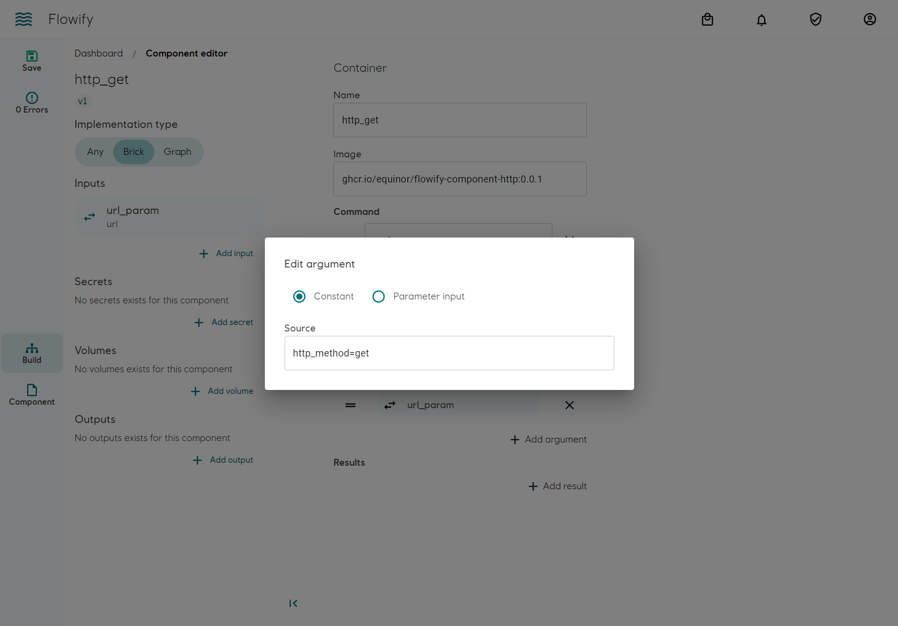
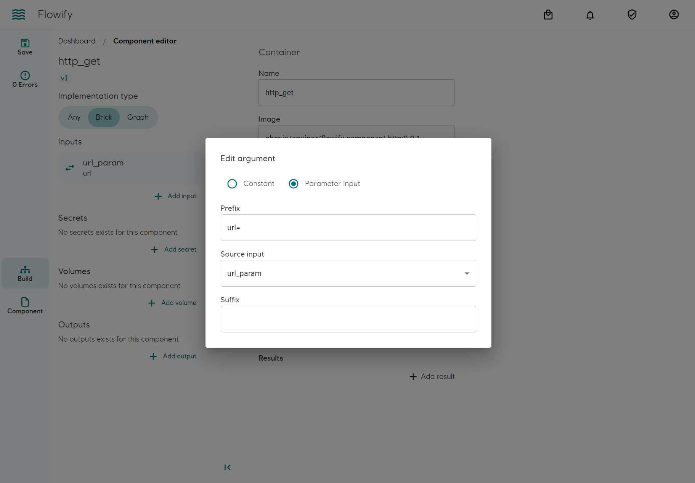
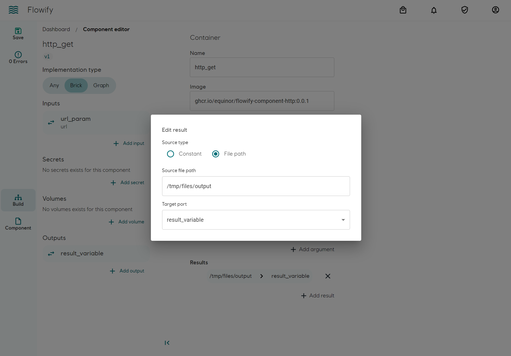
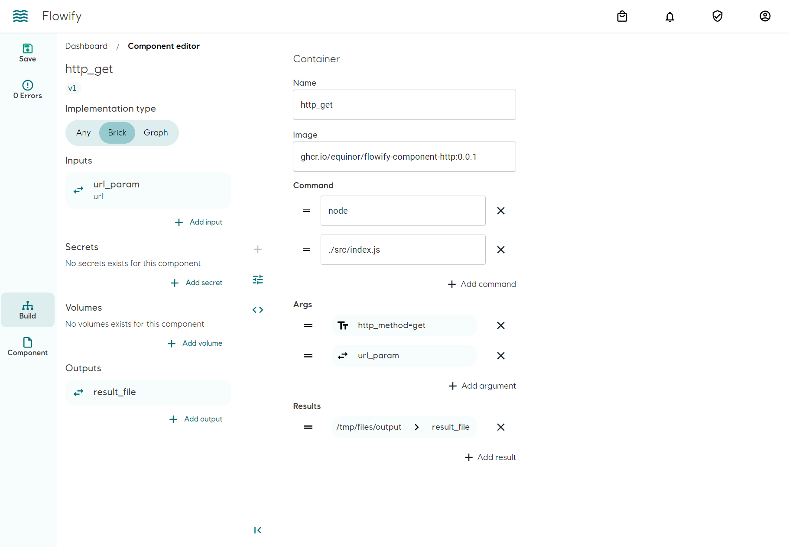
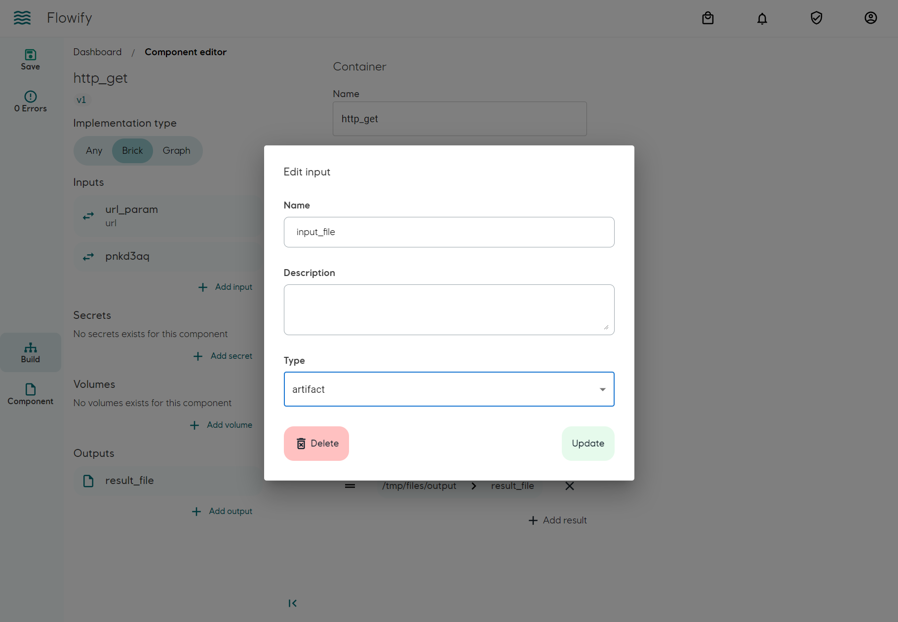
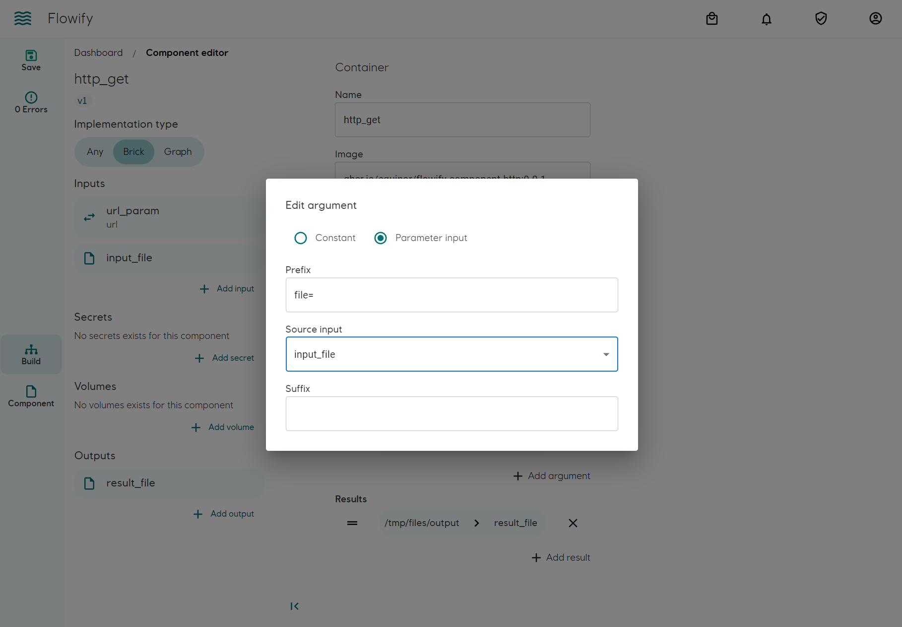
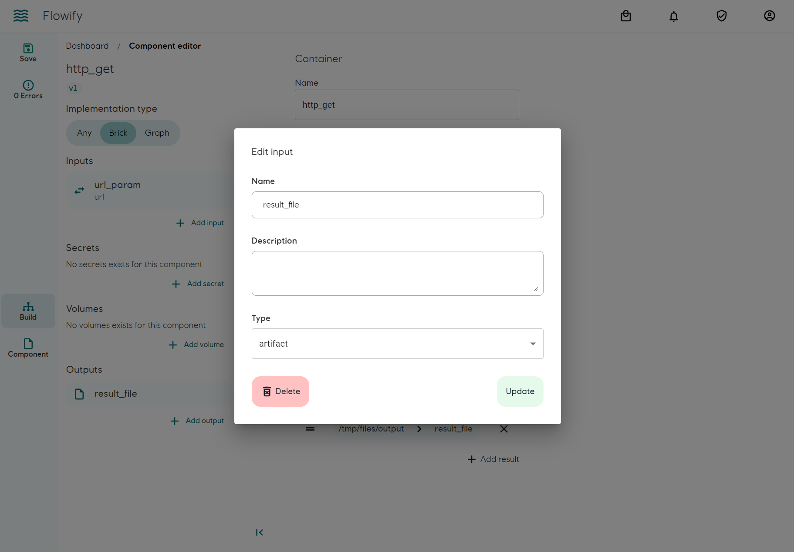
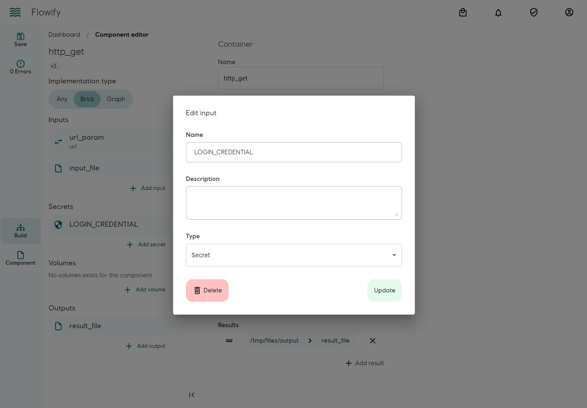
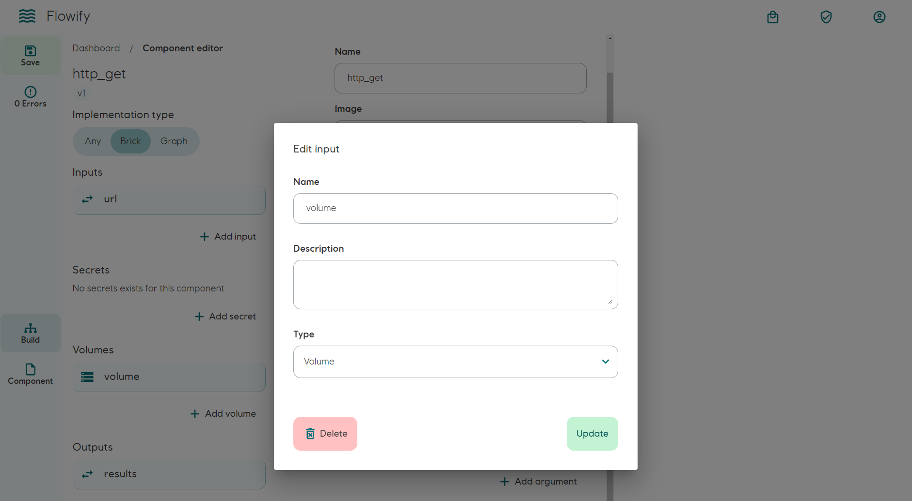
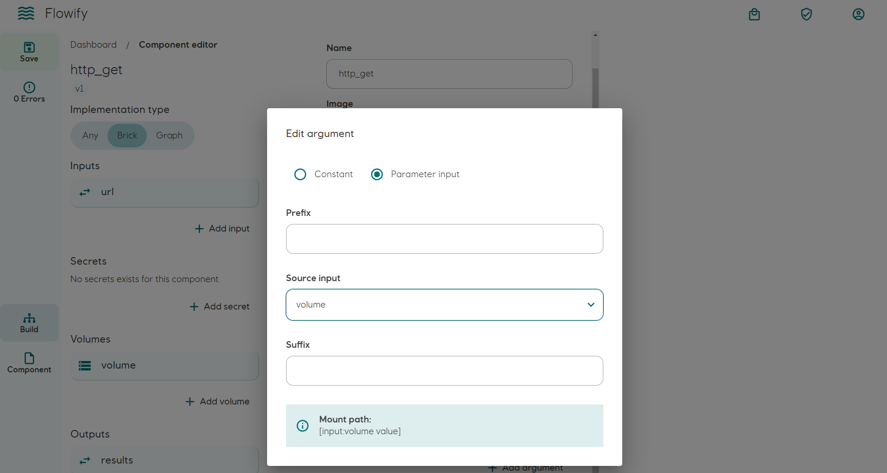

Bricks
Concept
The brick component is an representation of Argo Workflow's Container template. The implementation at run time is handled by Argo Workflow. Flowify is responsible for generating the Container template when used in a workflow.
The core of a brick component consists of a OCI compliant container image. It is then wrapped around by a layer of input/output parameters, secrets and volumes. They are applied to the container by Argo Workflow as follows:
- Input parameters: Appened to the
Entrypointof the container - Output parameters: Copied and its values extracted from the container on completion
- Input/Output Artifacts: Handled by Argo Workflow and copied to and from the container
- Secrets: As environmental variables
- Volumne mount: Mount to the container using a corresponding CSI driver
One difference on the user level to Argo Workflow is Flowify handle Artifacts as Input/Output instead of a separate entity. It makes allows a more explicit and declarative data flow.
Private container registry
Pulling of container images from private registry is handled either by Argo Workflows or Kubernetes. Flowify does not verify if the cluster has permission to pull the image.
Building a brick
Prerequisities:
- Basic knowledge of container
- A published OCI compliant container image
Basic setup
In this example we will build a brick component that perform a HTTP GET request and uses the response as output
Example image: ghcr.io/equinor/flowify-component-http:0.0.1
As Flowify uses Argo Workflows as executor, ENTRYPOINT must be defined explicitly in command:
Args are appended to the ENTRYPOINT command. They can be a constant (e.g. http_method=get) or variables from input parameters (e.g. url=). In this example, the full command will be
node ./src/index.js http_method=get url=<INPUT_URL_FROM_FLOWIFY_PARAMETER>
Setting constant parameter. (Fixed for all execution)

Input parameter. (Variables injected by workflow)

Setting output parameter
Add an output on the left-hand pane and choose the correct Type. Use Parameter_array if you would like to utilize the parallelized Map component feature, otherwise use Parameter. When using Parameter_array, Flowify will try to parse the output as array. The content of the output file is expected to be [1, 2, 3]. More details.
Mediatype is only for annotation purpose.
The container saves the GET response under /tmp/files/output.json. We will need to define an output on the left-hand pane and mapped it to results on the right-hand pane. Flowify/Argo Workflows will extract values from the file and passes to the next component as input.

Overview

Using files (Artifacts)
Instead of parameter values, it is possible to pass data across components using a file (Artifact). It is advised to limit the usage of Artifacts in order to keep data flow lineage explicit.
An Artifact Repository must be configured in Argo Workflows. Flowify does not verify the configurations.
File as input
Add an component input on the left-hand pane and select artifacts as input type. 
Pass the path location of the artifact inside the container as Args. In this example, the full path will be available as `file=/artifacts/input_file in the container run arguments.

The path of the input artifact is /artifacts/<INPUT_PARAMETER_NAME>. You will need to make sure the container has the permission to access the file. See volume mount example
File as output
Select artifacts as output type on the left-hand pane. The file will be used as parameter in a workflow. Contents of the file will not be extracted. 
Add secrets
To add secrets to the component, add them on the left-hand pane. The secrets will be available as Environmental variables inside the container with the same name.
Naming must not begin with digits and not contain spaces (use dash _ ). It is conventional to use all uppercase characters.
In this example the name of the environmental variable is LOGIN_CREDENTIAL. The value will be injected by a workflow.

Add volume mount
Add volume mount as brick input on the left-hand pane.

Afterwards, add an Args on the right-hand pane. If leaving out prefix and suffix, the mount path to the container will be /<NAME_OF_VOLUME_INPUT>. The volume mount argument will not be appended to the `docker run arguments
.

As the container is run as non-root in Flowify, make sure the container has read permission to the mount path. It can be achieved in Dockerfile for example:
RUN mkdir /<NAME_OF_VOLUME_INPUT>
RUN chmod -R 777 /<NAME_OF_VOLUME_INPUT>
It is advised to limit the usage of volume mount in order to keep data flow lineage explicit.
Versioning and modifications
Under development